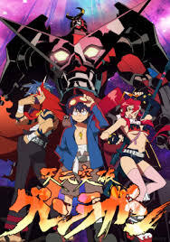
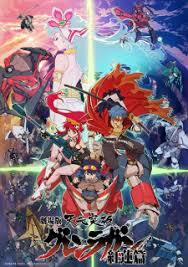
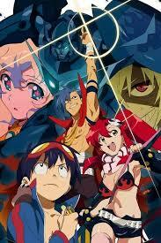
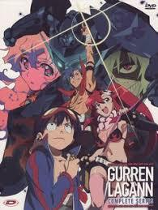
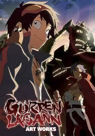
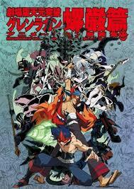
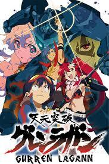
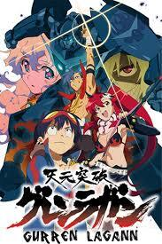
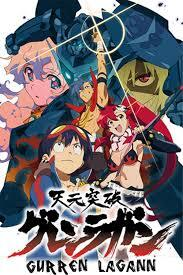

Nama: Gurren Lagann
Genre: Action
Rilis: 2007
Pemain: Simon, Kamina
Sutradara: Hiroyuki Imaishi
Penulis: Kazuki Nakashima
Stasiun: Bandai Entertainment, Aniplex, Konami
Anime






 


Story
Gurren Lagann takes place in a future where the Spiral King, Lordgenome, rules Earth and forces mankind to live in isolated subterranean villages which have no contact with the surface world or other villages and are under constant threat from earthquakes. Selected villagers called diggers are conscripted to expand their homes deeper underground. Simon, a meek young digger living in Giha village who is ostracized by his peers, finds solace in his best friend Kamina, an eccentric delinquent who is like an older brother figure to him. Kamina encourages Simon to join his gang, Team Gurren, to help him achieve his dream of visiting the surface world. One day, Simon unearths a drill-shaped key called a Core Drill, followed by a small mecha resembling a face called a Gunmen.[4][5] Soon after, a giant Gunmen crashes through the ceiling and begins attacking the village, followed by a girl named Yoko who attempts to repel the Gunmen. Simon uses his Core Drill to activate the smaller Gunmen, which Kamina names Lagann, and its drilling-based abilities. He successfully uses it to destroy the larger Gunmen and break through the ceiling, allowing him and Kamina to reach the surface world.
Yoko tells Simon and Kamina that humans on the surface face daily attacks from Gunmen, with their pilots being Beastmen, humanoid creatures that serve as Lordgenome's army. Kamina hijacks a Gunmen and names it Gurren, combining it with Lagann to form the mecha Gurren Lagann. Their actions inspire other humans to steal their own Gunmen and join Team Gurren, leading Kamina to rename it Team Dai-Gurren. Eventually, Team Dai-Gurren captures an enemy Gunmen fortress to use as their base of operations, but one of Lordgenome's four generals kills Kamina in the preceding battle. Rossiu, a boy from another village, takes over as Gurren's pilot, but Kamina's death causes Simon to sink into depression until he meets Nia, who is revealed to be Lordgenome's daughter. Team Dai-Gurren is initially distrustful of her, but allow her to join them after it becomes apparent that Lordgenome abandoned her, like many before her. Nia helps Simon come to terms with Kamina's death, and the rest of Team Dai-Gurren prompt him to take on the role of the team's leader, leading them and other teams of humans, who had captured other Gunmen and Gunmen fortresses, to Lordgenome's palace, which is revealed to be a gigantic Gunmen called the Teppelin and launches armies of other Gunmen. The human forces engage them while Simon, Nia, and Rossiu pilot Gurren Lagann against Lordgenome, who fights them in a similar Gunmen called Lazengann. With both Lazengann and Gurren damaged, Lordgenome fights Simon in Lagann with his bare hands, and emerges victorious until Simon uses his Core Drill to defeat him for good.
Over the next seven years, mankind prospers on the surface world, with Simon and the other members of Team Dai-Gurren serving as the world's government in their new capital of Kamina City. When the human population reaches one million people, an alien race called the Anti-Spirals emerges and uses Nia to announce their intentions. They have sent the Moon on a collision course with the Earth to wipe out the planet's life and prevent them from evolving to the extent they will risk destroying the universe in a cataclysmic event called the Spiral Nemesis. It is revealed that Lordgenome, who was resurrected as a bio-computer, was once part of an intergalactic army of warriors who failed to stop the Anti-Spirals and forced mankind underground to protect them. With help from Lordgenome and Viral, an old enemy of Simon who pilots Gurren, Simon, Gurren Lagann and Team Dai-Gurren prevent the Moon's collision, in the process revealing it to be Lordgenome's flagship that the Anti-Spirals reprogrammed. Using it, they retrieve the real Moon from the pocket dimension the Anti-Spirals had hidden it in and go to their homeworld. They rescue Nia, and in a one-on-one Gunmen battle across the universe, Simon and Lagann destroy the Anti-Spirals. However, this causes Nia to fade away into nothing, as her existence is tied to that of the Anti-Spirals. With his life in battle finally over, Simon hands his Core Drill over to Gimmy and leaves his friends to wander the planet as a nameless vagrant, stating that his destiny was merely to "dig the tunnel to the future", not to travel down it himself.
The epilogue is set twenty years after the team's victory over the Anti-Spirals. With most of Team Dai-Gurren having retired, a new generation of pilots has been tasked with preventing the Spiral Nemesis and ensuring the universe's safety. Other races from across the galaxy who contacted Earth after being freed from the Anti-Spirals have joined forces with President Rossiu of Kamina City and created the Galactic Spiral Peace Conference. Yoko, now as Miss Yomako, has become the principal of the small school she taught at during her seven year absence from the team. One of her students, Nakim, has become a representative of the galaxy in the Grapearl Squadron. Gimmy and Darry have used Simon's Core Drill to become the new pilots of Gurren Lagann. Viral has become the captain of the Super Galaxy Dai-Gurren and an emissary for Earth. Nia's memorial and her engagement ring are shown to have been placed next to the graves of Kamina and the members of Team Dai-Gurren who sacrificed themselves in the final battle. Simon, still living as Simon the Digger, watches over them as a squadron of Gurren Laganns flies through the night sky to join their Spiral brethren in the stars.